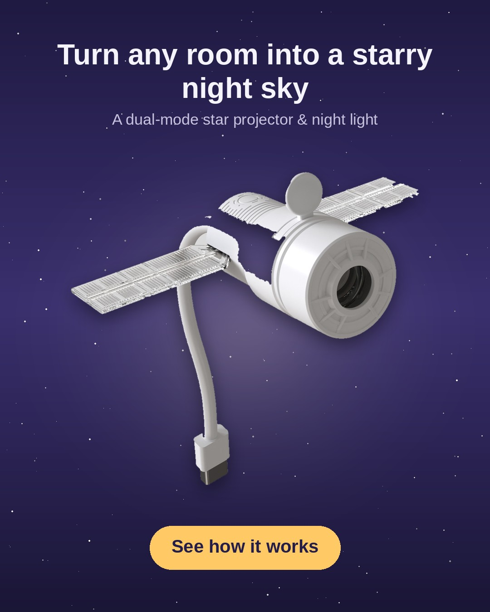
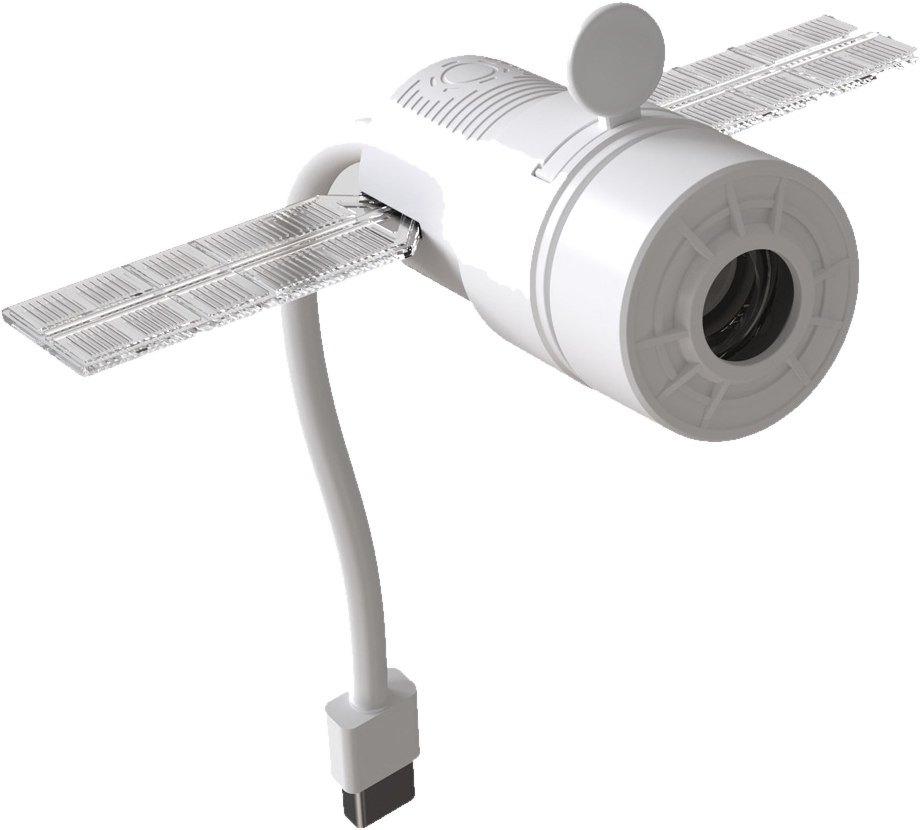
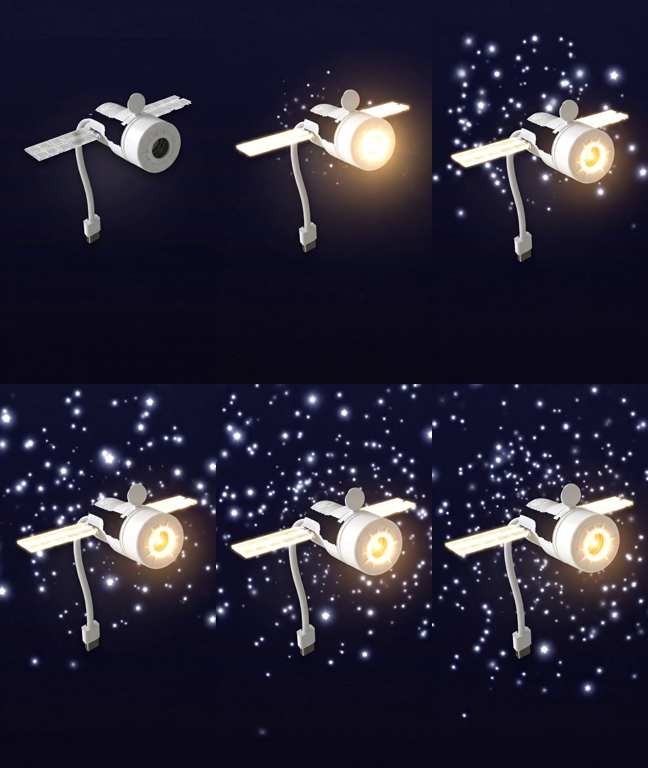

One system that scans global markets for real product opportunities, scores each product × market against fail-closed economic gates, produces founder-quality ad creative from protected product identity, and stages it for human-approved publishing — built on a governed Postgres backend with automation, disaster recovery, and a paid-access foundation.
Live product & market signals from Reddit, eBay, CJ Dropshipping, DataForSEO and the Meta Ad Library, ingested through canonical, provenance-tracked receivers.
One explainable recommendation per product × market — composite score, component sub-scores, and hard economic gates that a strong score can never buy past.
Founder-quality static & multi-scene video ads composed by a native FFmpeg engine from protected product identity — never a generic "image → video" tool.
Hosted conversion storefront, a PAUSED-only Meta ad executor, and an organic social-publishing foundation — all behind human approval.
Row-level-secured Postgres, provider-neutral paid entitlement, and a documented disaster-recovery posture with schema snapshots and runbooks.
A single strategy "brain" turns intelligence into an organic-or-paid strategy and hands off to creative production — it decides, it never renders.
External signals flow up through automation into a governed backend; a decision engine and creative studio sit on top; every outbound action passes a human-approval gate. Credentials never leave the secret stores.
A single canonical orchestrator runs every Monday 07:00 UTC. Each product × market is processed with per-market failure isolation — a failed source is recorded and the run continues rather than fabricating evidence.
Each source has a preflight state. Blocked providers are reported as blocked — the system never manufactures substitute evidence, and no external credential is reachable from the browser.
| Source | Role | Access | State |
|---|---|---|---|
| eBay Browse API | Marketplace demand & competitor comparables | free · OAuth | READY · live-proven |
| Community product-attention sweep | public JSON | READY | |
| CJ Dropshipping | Supplier match, stock & landed freight | API key | READY |
| Meta Ad Library | Ad-platform intelligence (EU/UK) | free | READY |
| DataForSEO | Search / buyer-intent demand | vault · paid | READY · cost-gated |
| TikTok Commercial Content | Ad-library research (not publishing) | client-cred broker | RESEARCH ONLY |
| Google Ads | Keyword demand (intended) | dev token | SOURCE BLOCKED |
Product identity is authoritative and protected — generation models are renderers only, never the product source. A native FFmpeg compositor assembles multi-scene ads; the real device is shown from Product-Card pixels, environment scenes are generated, and anything with a generated device stays IDENTITY_REVIEW_REQUIRED.



Video generation runs under a hard per-run cap (≈$1.20/scene, ≤$4 authorized) and integration tests execute end-to-end at $0.00 with publishing and spend disabled by contract.
The AI Marketing Director consumes real decisions and emits a structured strategy — then hands off to creative production. Organic and advertising are modelled as disjoint lineages; a connection row is never both, and automation is never inferred from a connection.
The guarantees below are enforced in the schema and functions, not left to convention — verified in each unit's self-tests.
Both new social tables (and the rest) enable RLS with FORCE and zero permissive policies; all access flows through SECURITY DEFINER functions with an empty search_path.
Connection rows store a non-secret secret_ref only; a CHECK constraint rejects token-shaped values. Real credentials live in the n8n / edge secret stores.
Any failed stock, price, economics, compliance or fulfilment gate forces AVOID. Economics never borrows certainty from a different product (identity resolver).
Publish, activation and spend all default to false; automatic publishing requires an explicit grant and is never inferred from an account connection.
Provider-neutral entitlement store; the browser can neither read nor write entitlement. Authentication alone and verification alone do not grant access.
Every model is tenant-scoped; the platform is not hard-coded to any single business — real accounts appear only as tenant data in tests.
Targets: RPO ≤ 24h, RTO ≤ 4h. Each component carries a candid protection status — the DR inventory does not overstate what is fully protected versus what still depends on a provider or an operator step.
| Component | Backup method | RPO / RTO | Status |
|---|---|---|---|
| Source / Git | Remote + independent encrypted bundle | min / 15m | PARTIAL |
| DB schema (93 tbl / 370 fn) | Committed SQL snapshots + manifest | commit / 1h | PROTECTED |
| DB data (logical) | pg_dump -Fc, gpg-encrypted | 24h / 2h | PARTIAL |
| Edge functions (12) | Git — all recovered into repo | commit / 1h | PROTECTED |
| Storage media | Backup script + object manifest | 24h / 1h | PARTIAL |
| Automation workflows | Inventory + committed critical defs | 7d / 2h | PARTIAL |
| Secrets / config | References only — recreation runbook | — / 1h | PARTIAL |
| Provider DB (PITR) | Managed by provider (verify in console) | unknown | PROVIDER DEP. |
| Approved schedules | Committed defs + cadence recovery | commit / 30m | PROTECTED |
Every visual above is derived directly from repository evidence (migrations, schema snapshots, edge functions, workflow inventory, delivery records and real generated creative). The items on the right genuinely require the authenticated live UI or automation canvas and were deliberately not recreated as if they were real screenshots.
Capture & sanitization guidance for each of these is in portfolio/README.md — redact account IDs, project refs, hostnames, tokens and any customer data before use.